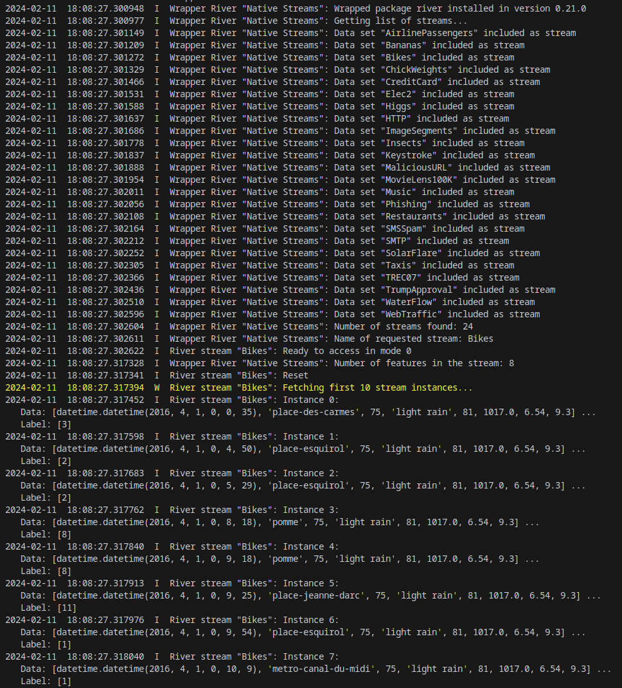

Howto BF-STREAMS-001: Accessing Native Data From MLPro
Executable code
## -------------------------------------------------------------------------------------------------
## -- Project : MLPro - A Synoptic Framework for Standardized Machine Learning Tasks
## -- Package : mlpro_int_river
## -- Module : howto_bf_streams_001_accessing_data_from_river.py
## -------------------------------------------------------------------------------------------------
## -- History :
## -- yyyy-mm-dd Ver. Auth. Description
## -- 2022-06-14 0.0.0 LSB Creation
## -- 2022-06-14 1.0.0 LSB Release of first version
## -- 2022-06-25 1.0.1 LSB Refactoring for new label and instance class
## -- 2022-10-12 1.0.2 DA Renaming
## -- 2022-11-07 1.1.0 DA Refactoring after changes on class Stream
## -- 2022-11-08 1.1.1 DA Minor improvements
## -- 2022-11-19 1.1.2 DA Get string by name
## -- 2022-11-21 1.1.3 DA Correction on logging
## -- 2023-02-02 1.1.4 DA Correction of time measurement
## -- 2023-04-16 1.1.5 DA Get number of instances from stream
## -- 2024-01-30 1.2.0 DA Relocation to separate github repository
## -------------------------------------------------------------------------------------------------
"""
Ver. 1.2.0 (2024-01-30)
This module demonstrates the use of River datasets as streams in MLPro. To this regard, MLPro
provides wrapper classes to standardize stream access in own ML applications.
You will learn:
1) How to access datasets of the River project.
2) How to iterate the instances of an River stream.
3) How to access feature and label data of a data stream.
"""
from datetime import datetime
from mlpro_int_river.wrappers import *
from mlpro.bf.various import Log
# 0 Prepare Demo/Unit test mode
if __name__ == '__main__':
num_inst = 10
logging = Log.C_LOG_ALL
else:
print('\n', datetime.now(), __file__)
num_inst = 2
logging = Log.C_LOG_NOTHING
# 1 Create a Wrapper for River stream provider
river = WrStreamProviderRiver(p_logging=logging)
# 2 Get a list of streams available at the stream provider
stream_list = river.get_stream_list(p_logging = logging)
# 3 Get stream "Bikes" from the stream provider
mystream = river.get_stream(p_name='Bikes', p_logging=logging)
# 4 Get the feature space of the stream
feature_space = mystream.get_feature_space()
river.log(mystream.C_LOG_TYPE_I,"Number of features in the stream:",feature_space.get_num_dim())
# 5 Set up an iterator for the stream
myiterator = iter(mystream)
# 6 Fetching some stream instances
myiterator.log(mystream.C_LOG_TYPE_W,'Fetching first', str(num_inst), 'stream instances...')
for i in range(num_inst):
curr_instance = next(myiterator)
curr_data = curr_instance.get_feature_data().get_values()
curr_label = curr_instance.get_label_data().get_values()
myiterator.log(mystream.C_LOG_TYPE_I, 'Instance', str(i) + ': \n Data:', curr_data[0:14], '...\n Label:', curr_label)
# 7 Resetting the iterator
myiterator = iter(mystream)
# 8 Fetching all 182,470 instances
myiterator.log(mystream.C_LOG_TYPE_W,'Fetching all', str(mystream.get_num_instances()), 'instances...')
for i, curr_instance in enumerate(myiterator):
if i == num_inst:
myiterator.log(Log.C_LOG_TYPE_W, 'Rest of the', str(mystream.get_num_instances()), 'instances dark...')
myiterator.switch_logging(p_logging=Log.C_LOG_NOTHING)
tp_start = datetime.now()
curr_data = curr_instance.get_feature_data().get_values()
curr_label = curr_instance.get_label_data().get_values()
myiterator.log(mystream.C_LOG_TYPE_I, 'Instance', str(i) + ': \n Data:', curr_data[0:14], '...\n Label:', curr_label)
# 8.1 Some statistics...
tp_end = datetime.now()
duration = tp_end - tp_start
duration_sec = ( duration.seconds * 1000000 + duration.microseconds + 1 ) / 1000000
rate = ( myiterator.get_num_instances() - num_inst ) / duration_sec
myiterator.switch_logging(p_logging=logging)
myiterator.log(Log.C_LOG_TYPE_W, 'Done in', round(duration_sec,3), ' seconds (throughput =', round(rate), 'instances/sec)')
Results
{kind=link}
- Cross Reference